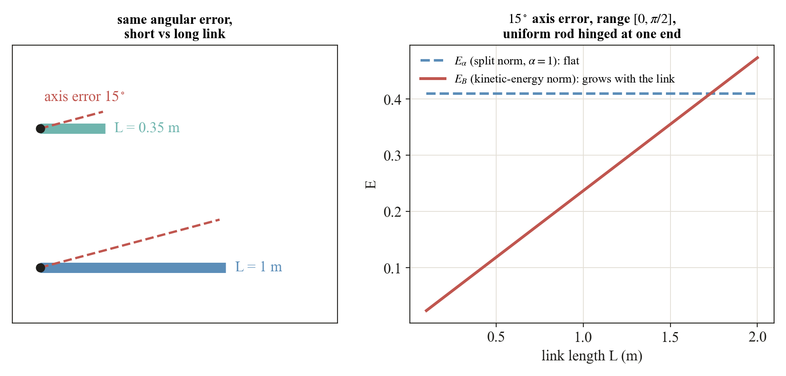
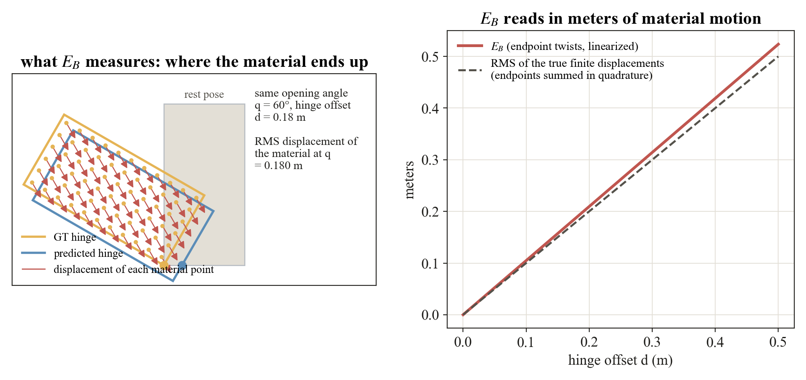

The formula for E only asks for a norm on twist differences
Δz = (Δω, Δv) that comes from an inner product. Two are offered, and the
subscript on E says which one is inside.

The same 15° axis error on a short and a long link. The split norm scores it identically for every link. The kinetic-energy norm scores it by the material that actually moves.
The split norm‖Δz‖α² = ‖Δω‖² + α²‖Δv‖² weighs rotation
against translation through one inverse length α. It needs no geometry, is
dimensionless, and compares every joint of every object by one rule. The kinetic-energy norm‖Δz‖B² = (1/m) Δωᵀ I Δω + ‖Δv + Δω × c‖² lets the moving link set
the scale: m, c, and I
are the mass, center of mass, and inertia of the ground-truth child link. Under it
EB is in meters and equals the RMS linearized motion of the link's
material.

Left: a door opened by 60° about the true hinge and about a hinge offset by 0.18 m. The red arrows are where each material point ends up differently. Right: EB tracks the RMS of those displacements as the offset grows. The small gap is the linearization.
When the two norms agree. On purely translational differences
(Δω = 0) and α = 1 they coincide exactly, which is
why the prismatic panels of the ablations overlap. They separate where rotation enters.
α is a size assumption. For a centered link with isotropic inertia and gyration radius
r, the kinetic norm equals r² times the split norm at
α = 1/r. A global α therefore assumes every link has
the same size 1/α. The object-scale ablation shows the consequence:
EB(s) = s EB(1) under a uniform scaling
s, while Eα is flat on angular errors.
EB is still a metric. The body B is fixed by the
ground truth before any prediction is seen and is the same for every method on that joint, so the
norm is one fixed inner-product norm and the quotient argument applies verbatim. Different ground-truth
joints carry different norms, which is the intended physical weighting.
Units.Eα is a pure number,
EB is meters. Never compare their heights, only their shapes.